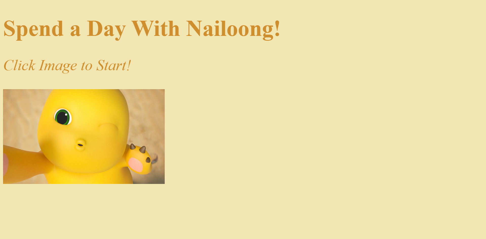

Spend a Day with Nailoong!
For this project, I wanted to make a cute choose-your-adventure style type of game using one of my favorite characters. The player gets to "spend the day" with Nailoong by helping him decide what to do. After the landing page, the player is given two choices that respond to the current page's prompt. Each decision is written as a link, so when the player clicks on their choice, the site would take them to a separate page with a corresponding picture. Overall, I want the viewer to have a fun experience and enjoy these cute pictures I found of Nailoong. I initially had trouble with the positioning of the links because they were always placed too close together by default. To address the problem, I looked up ways to adjust the spacing and alignment, and found that div tags were the easiest to use and got the job done.
Spend a Day With Nailoong!
